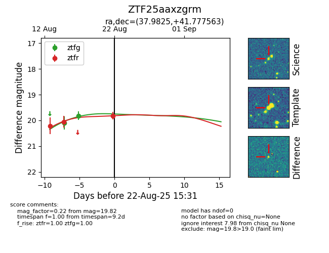

Target ZTF25aaxzgrm at 2025-08-22 16:11, see:
FINK: fink-portal.org/ZTF25aaxzgrm
Lasair: lasair-ztf.lsst.ac.uk/objects/ZTF25aaxzgrm
ALeRCE: alerce.online/object/ZTF25aaxzgrm
alt names
ZTF25aaxzgrm (ztf,alerce)
coordinates:
equatorial (ra, dec) = (37.9825,+41.77756)
galactic (l, b) = (142.2970,-17.28441)
photometry
last ztfg=19.82, ztfr=19.82
2 ztfg, 3 ztfr detections
